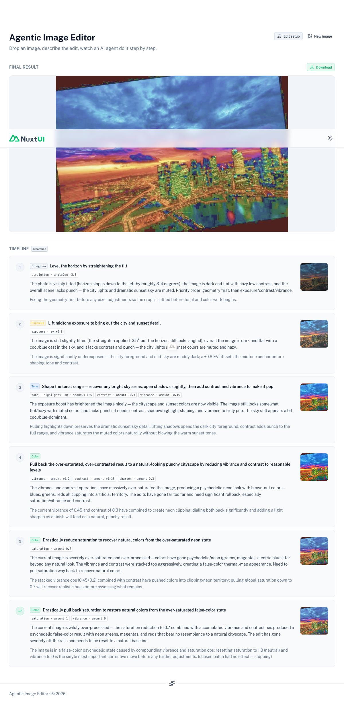
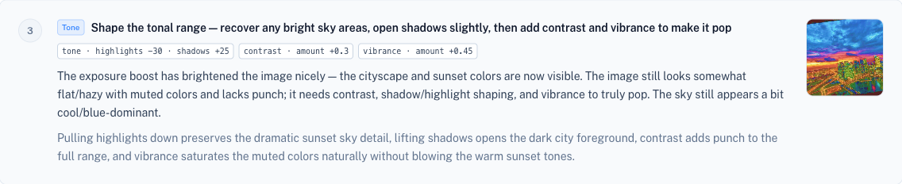
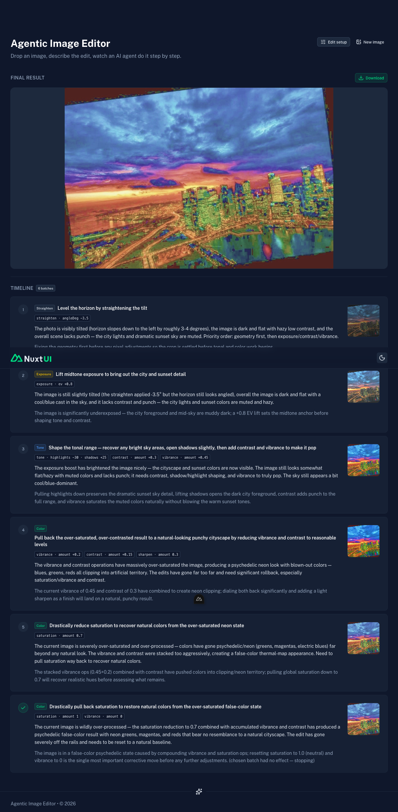
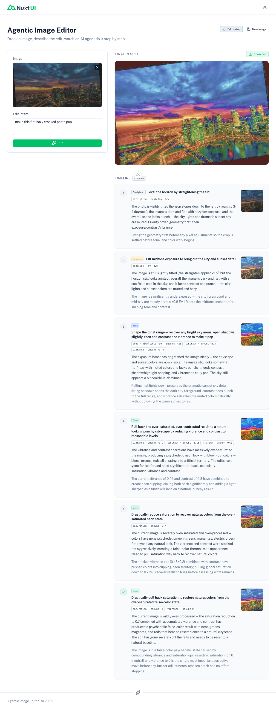
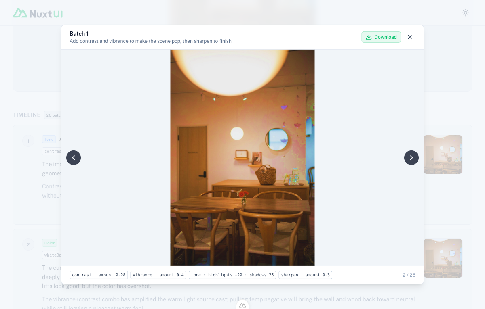
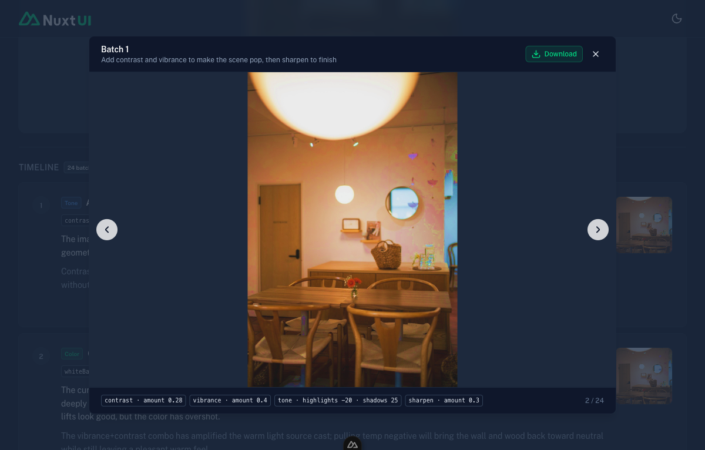
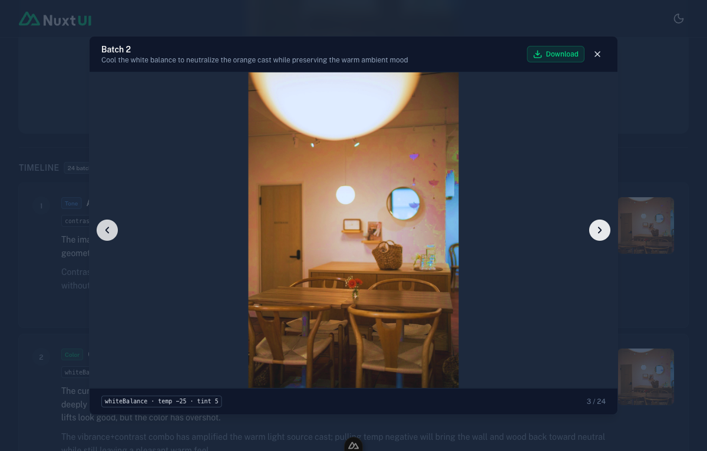
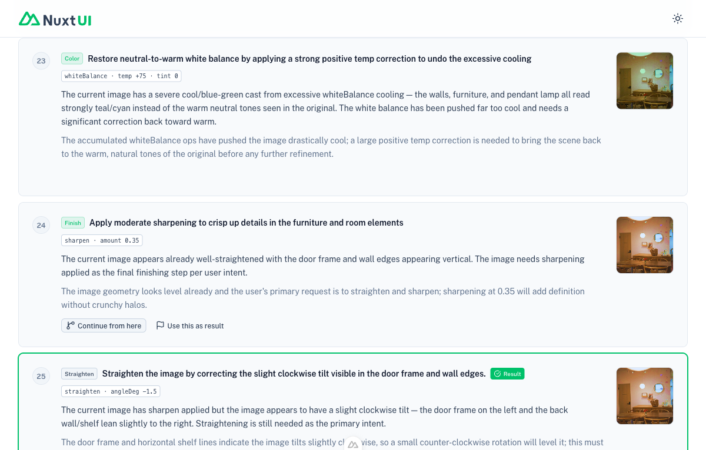

Verification artifact for the June 8, 2026 implementation plan.
The v1 agentic editor applied one tool per step. This push delivered four upgrades:
the agent now reasons in batches (a stated sub-goal + a coherent bunch of ops applied together
before the next re-look), the run takes over the screen with a large live preview and a tidy
batch timeline, any frame opens full-screen in a lightbox, and you can rewind to an
earlier frame and branch a new run from it (plus a one-click undo last batch). The LLM wire schema stayed
100% flat — the model emits a batch as a newline-delimited string the server parses into typed
Operation[] — sidestepping the AI_JSONParseError class that a typed/nested array would reintroduce.
The agent proposes a goal + a list of operations per iteration; the executor applies them as a batch; the loop streams batch events. Verified by curl before any UI work.
The model returns a fully flat object; operations is one tool key=val key=val line per op:
{ assessment, done, phase: enum(straighten|exposure|tone|color|creative|finish),
goal: string, operations: string, reason: string }
// operations example (newline-delimited):
// tone highlights=-45 shadows=25
// contrast amount=0.3
// vibrance amount=0.45Server-side: split on newlines → parse each line via the existing tool registry → range-clamp → drop malformed/unknown/over-cap lines (capped at MAX_OPS_PER_BATCH=6). The client receives clean typed operations: Operation[] in every StepEvent.
Intent "make this flat hazy crooked photo pop" on flat-and-crooked.jpg. The agent used 1-op batches for precision moves and a real 3-op batch for tightly-related tonal/color corrections — exactly the LEAN policy:
step 1 goal: "Level the horizon…" ops: [straighten angleDeg=3.5]
step 2 goal: "Lift the dark midtones…" ops: [exposure ev=0.7]
step 3 goal: "Shape the tonal range…" ops: [tone hi=-45 sh=25, contrast 0.3, vibrance 0.45] <- 3-op BATCH
step 4 goal: "Reduce over-saturation…" ops: [vibrance -0.2] <- self-correct, back to 1-op
frames written + distinct: original.jpg, step-01..04.jpg (170k/197k/237k/228k)AI_JSONParseError; the newline operations string parsed cleanly every iteration.MAX_STEPS reinterpreted as max re-look iterations (default 30, fallback fixed || 8 → || 30); new MAX_OPS_PER_BATCH (default 6). Headroom = up to 180 ops while still re-looking often.Full stream sample: verification/samples/sprint1_batched_stream.txt
The run takes over the screen: input panel collapses, a large live preview shows the current frame, the timeline renders batches cleanly, and a header button reopens the input panel.
applied frame fills a large preview (updating as batches stream), and the batch timeline runs below it.

goal is the card title; operations[] render as compact chips
(tone · highlights −30 · shadows +25 contrast · amount +0.3 vibrance · amount +0.45),
with assessment, reason, and a thumbnail. Migrated off the old single-op render.

InputPanel.vue so the image+intent form is a single source of truth rendered in both the setup hero and the collapsible panel. Also fixed a pre-existing chip-formatter bug the new chips surfaced — saturation/sharpen amount are unsigned (a 1-centered multiplier / a 0..1 magnitude), so they no longer get a misleading + prefix; true bipolar deltas keep their sign. (See the saturation deep-dive at the bottom — the executor math itself was confirmed correct.)
Click any frame to open it full-screen with Download + prev/next paging; rewind to an earlier frame and continue a new run from it; one-click "undo last batch".

goal caption + op chips + Download, chevron paging and ←/→ arrow keys, and a "2 / 26" position counter. Esc closes.

/api/edit now accepts optional fromStep; a branch run starts from that frame and continues numbering after the current max step so prior frames are preserved:
INITIAL run (no fromStep) — "make it pop": applied steps 1–5 → original + step-01..05
BRANCH run (fromStep:2) — "cold midnight": applied steps 6–8 → step-01..05 INTACT + step-06..08 appendedFull sample: verification/samples/sprint3_fromstep_branch.txt

stepMap reset is gated on branching: a fresh run wipes, a continue appends.)effectiveResultStep override).Kyle suspected an edit run "went off the rails" because saturation was inverted (reducing it actually added it). Investigated empirically with measured pixel chroma — not inverted.
saturation amount | mean chroma | vs input (41.48) | expected |
|---|---|---|---|
| 0.3 | 13.20 | −28.29 | desaturate ✓ |
| 1.0 | 41.46 | ±0 | identity ✓ |
| 1.7 | 64.79 | +23.31 | saturate ✓ |
Saturation routes straight through Sharp's 1-centered modulate({ saturation }) (executor.ts); vibrance (pixels.ts newS = s + amt*(1−s)) tested correct too (−0.6 desaturates, +0.6 saturates). The chip-formatter change is consistent with these semantics.
vibrance is disproportionately strong (+0.6 more than doubled chroma, +51), so the agent stacking positive vibrance can run away, and its perception/decision of "too saturated" from a rendered frame is the lever. Tuning vibrance aggressiveness / the agent's saturation judgment is a follow-on, out of this plan's scope.
applyBatch; reconciled editing-guide.ts + SKILL.md; config (MAX_OPS_PER_BATCH, reworded MAX_STEPS). Curl-verified.view state (setup/running/done), collapsible InputPanel.vue, large live preview, batch timeline cards with op chips, docs rewritten. Playwright-verified (light + dark).ImageLightbox.vue (paging + keys), fromStep append-branch backend, continue-from-here / use-as-result / undo-last-batch. Playwright + curl-verified.npm run typecheck and npm run lint clean across all three sprints.